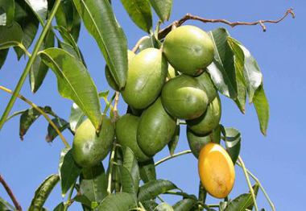

আমড়ার পরিচিতি
আমড়া অতি পরিচিত একটি ফল। আমড়ার বৈজ্ঞানিক নাম Spondias pinnaata Kurz বা Spondias
mombin। আমড়া Anacardiaceae পরিবারের একটি উদ্ভিদ।

কাঁচা ফল টক বা টক মিষ্টি হয়, তবে পাকলে টকভাব কমে আসে এবং মিষ্টি হয়ে যায়। এই ফল
কাঁচা ও পাকা রান্না করে বা আচার বানিয়ে খাওয়া যায়। আমড়া আগস্ট মাসে বাজারে আসে আর
থাকে অক্টোবর পর্যন্ত। আমড়া কষ ও অম্ল স্বাদযুক্ত একটি ফল।
আমড়ার পুষ্টি উপাদান
প্রতি ১০০ গ্রাম খাদ্যোপযোগী আমড়াতে যেসব পুষ্টি উপাদান রয়েছে তা হলো- শর্করা ১৫ গ্রাম, আমিষ ১.১ গ্রাম, চর্বি ০.১ গ্রাম, ক্যালসিয়াম ৫৫ মিলিগ্রাম, আয়রন ৩.৯ মিলিগ্রাম, ক্যারোটিন ৮০০ মাইক্রোগ্রাম, ভিটামিন বি১০.২৮ মিলিগ্রাম, ভিটামিন বি২ ০.০৪ মিলিগ্রাম, ভিটামিন সি৯২ মিলিগ্রাম, অন্য খনিজ পদার্থ ০.৬ গ্রাম, খাদ্যশক্তি ৬৬ কিলোক্যালরি।
আমড়ার উপকারীতা
আমড়া ফলে আছে পর্যাপ্ত ভিটামিন সি, যা স্কার্ভি রোগ প্রতিরোধ করে। স্কার্ভি হচ্ছে এমন
একটি রোগ, যার কারণে দাঁতের মাড়ি ফুলে যায়, দাঁতের গোড়া থেকে পুঁজ ও রক্ত পড়ে,
মাড়িতে প্রচণ্ড ব্যথা হয়।
কোষ্ঠকাঠিন্য দূর করে ওজন কমাতে সহায়তা করে।
রক্তের কোলেস্টেরলের মাত্রা কমায়।
অ্যান্টি-অক্সিডেন্টজাতীয় উপাদান থাকায় আমড়া বার্ধক্যকে প্রতিহত করে।
ক্ষুধামন্দাভাব দূর হয়। কফ দূর করে।
পাকস্থলী সুস্থ রাখে।
ক্যান্সারের মতো মারাত্মক রোগ প্রতিরোধেও আমড়া কাজ করে।